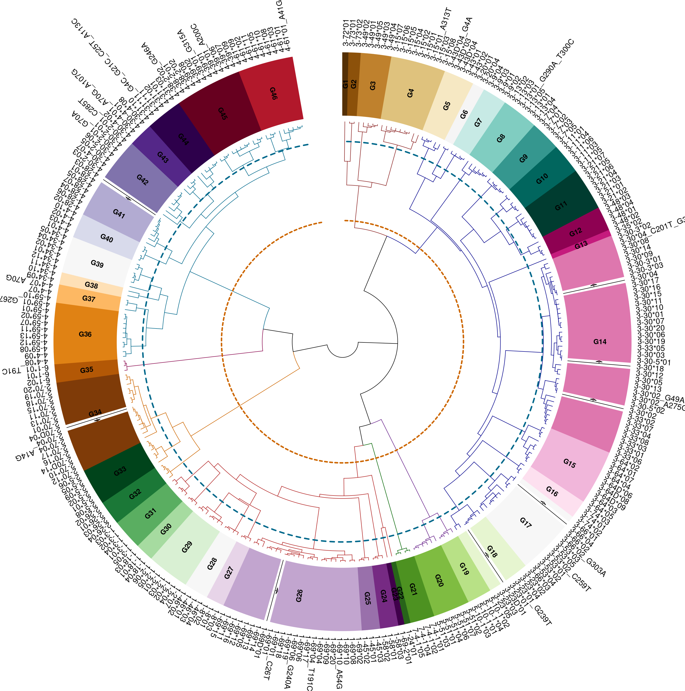
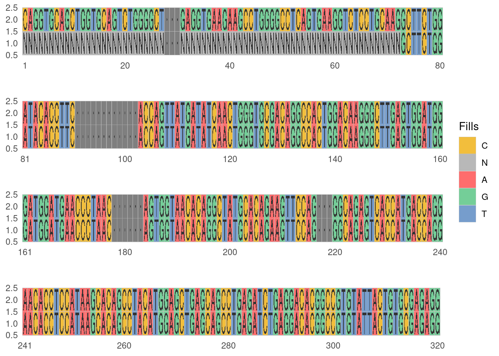
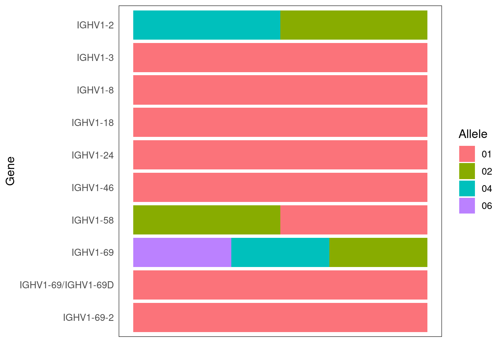

PIgLET - R pakcage
Program for Ig clusters R package (PIgLET) is a suite of computational tools that improves genotype inference and downstream AIRR-seq data analysis. The package as two main tools. The first is Allele Clusters, this tool is designed to reduce the ambiguity within the IGHV alleles. The ambiguity is caused by duplicated or similar alleles which are shared among different genes. The second tool is an allele based genotype, that determined the presence of an allele based on a threshold derived from a naive population.
(figures/piglet_logo.svg)
Installing PIgLET
PIgLET is available for installation from the development version.
To build from the source code, first install the build dependencies:
install.packages(c("devtools", "roxygen2", "testthat", "knitr", "rmarkdown", "plotly"))To install the latest version via devtools:
library(devtools)
install_bitbucket("yaarilab/piglet")Note, installing from bitbucket does not generate the documentation. To generate them, first clone the repository and then build:
library(devtools)
install_deps()
document()
build()
install()Allele Similarity Cluster
The functions in this section support the creation of the allele similarity cluster form an IGHV germline set, the table below shows the functions and a short description for each:
| Function | Description |
|---|---|
| inferAlleleClusters | The main function of the section to create the allele clusters based on a germline set |
| ighvDistance | Calculate the distance between IGHV aligned germline sequences |
| ighvClust | Hierarchical clustering of the distance matrix from ighvDistance |
| generateReferenceSet | Generate the allele clusters reference set |
| plotAlleleCluster | Plots the Hierarchical clustering |
| artificialFRW1Germline | Artificially create an IGHV reference set with framework1 (FWR1) primers |
Inferring Allele Similarity Clusters
The main function in this section inferAlleleClusters returns an S4 object that includes the ASC allele cluster table alleleClusterTable with the new names and the default thresholds, the renamed germline set alleleClusterSet, and the germline set hierarchical clustering hclustAlleleCluster, and the similarity threshold parameters threshold. Further by using the plot function on the returned object, a colorful visualization of the allele clusters dendrogram and threshold is received.
The function receives as an input a germline reference set of allele sequences, the filtration parameters for the 3’ and 5’ regions, and two similarity thresholds for the ASC clusters and families.
To create the clusters we will first load data from the package:
- The IGHV germline reference - this reference set was download from IMGT in July 2022.
library(piglet)
data(HVGERM)2.The allele functionality table - the table contains functionality information for each of the alleles. Download from IMGT in July 2022
data(hv_functionality)Before clustering the germline set, we will remove non functional alleles, alleles that do not start on the first 5’ nucleotide, and those that are shorter than 318 bases.
code listing 1: Clean germline set
germline <- HVGERM
## keep only functional alleles
germline <- germline[hv_functionality$allele[hv_functionality$functional=="F"]]
## keep only alleles that start from the first position of the V sequence
germline <- germline[!grepl("^[.]", germline)]
## keep only alleles that are at minimum 318 nucleotide long
germline <- germline[nchar(germline) >= 318]
## keep only localized alleles (remove NL)
germline <- germline[!grepl("NL", names(germline))]Then we will create the ASC clusters using the inferAlleleClusters function. For better clustering results with the human IGHV reference set, it is recommended to set the trim_3prime_side parameter to 318. Here, we will use the default similarity thresholds 75% for the family and 95% for the clusters.
code listing 2: ASC inference
asc <- inferAlleleClusters(
germline_set = germline,
trim_3prime_side = 318,
mask_5prime_side = 0,
family_threshold = 75,
allele_cluster_threshold = 95)The output of inferAlleleClusters is an S4 object of type GermlineCluster that contains several slots:
| Slot | Description |
|---|---|
| germlineSet | The input germline set with the 3’ and 5’ modifications (If defined) |
| alleleClusterSet | The input germline set with the ASC name scheme, if exists without duplicated sequences |
| alleleClusterTable | The allele similarity cluster with the new names and the default thresholds |
| threshold | The input family and allele cluster similarity thresholds |
| hclustAlleleCluster | Germline set hierarchical clustering, an hclust object |
We can use the S4 plot method to plot the hierarchical clustering of the germline set as seen below in Figure 1.
plot(asc)
Artificial framework 1 reference set
As described in Section 1, not all repertoires data available covers the entire V region. Hence, a modified reference set for the sequenced region can help us further understand the results we can obtain from certain library protocols.
Hence, we created the function artificialFRW1Germline, to mimic the seen coding region of targeted framework 1 (FRW1) primers for a given reference set. The primers were obtained from BIOMED-2 protocol (Van Dongen et al. 2003).
Essentially the function matches the primer to each of the germline set sequences and either mask or trim the region. The returned object is a character vector with the named sequence in the desire length (Trimmed/Masked).
To demonstrate the use of the function, we can use the cleaned germline set from above (Listing 1). In this case we will mask the FRW1 region, this will return the sequences with the Ns instead of DNA nucleotide. The function output a log of the process, this output can be repressed using the quite=TRUE flag.
germline_frw1 <- artificialFRW1Germline(germline, mask_primer = T)282/286 germline sequences have passed
Counts by primers:
VH1-FR1:53,VH2-FR1:25,VH3-FR1:122,VH4-FR1:69,VH5-FR1:10,VH6-FR1:3We will look at one sequence, “IGHV1-8*01” to see the masking:
allele = "IGHV1-8*01"
dna_seq <- Biostrings::DNAStringSet(setNames(c(germline[allele], germline_frw1[allele]),
c("IGHS1V1-8*01", "IGHS2V1-8*01")))
colors <- data.frame(names = c("A","T","C","G","N","."),
color = c("#ff6d6d","#769dcc","#f2be3c",
"#74ce98","#b8b8b8","#ffffff"))
ggmsa::ggmsa(dna_seq, custom_color = colors, show.legend = T) +
ggmsa::facet_msa(field = 80)
We can use the artificial germline set to infer the ASC clusters in the same fashion as in Section 2.1
Allele based genotype
Genotype inference is important for downstream analysis of B cell repertoires. Utilizing this technique can reduce bias annotating the repertoire, gene and allele usage analysis, and much more (Chapter 1). In PIgLET the Allele based genotype section is dedicated to the ASC-based genotype inference.
| Function | Description |
|---|---|
| inferGenotypeAllele | Infer the IGHV genotype using the allele based method |
| assignAlleleClusters | Renames the v allele calls based on the new allele clusters |
| germlineASC | Converts IGHV germline set to ASC germline set |
| recentAlleleClusters | Download the most recent version of the allele clusters table archive from zenodo |
| extractASCTable | Extracts the allele cluster table from the zenodo archive file |
ASC-based thresholds
Part of the IGHV reference book is to explore the distribution of the alleles in the population and determine the appropriate allele threshold. The default threshold for any allele is \(0.0001\), this value is also what the function inferAlleleClusters returns for each of the alleles in the germline set. To use the threshold in the reference book (Section 1.1), PIgLET include two functions to retrieve the latest update thresholds from the zenodo archive (doi:)
First we will retrieve the archive files using the recentAlleleClusters function. The function can get a path value for locally saving the archive files with the path flag, if non is supplied then the function save the files in a temporary directory. The flag get_file=TRUE, will return the downloaded file full path.
asc_archive <- recentAlleleClusters(doi="10.5281/zenodo.7401189", get_file = TRUE)To extract the ASC threshold table we can use the extractASCTable function
allele_cluster_table <- extractASCTable(archive_file = asc_archive)The table is has identical ASC clusters to the table we created above (Listing 2).
# A tibble: 6 × 3
new_allele imgt_allele.piglet imgt_allele.zenodo
<chr> <chr> <chr>
1 IGHVF1-G1*01 IGHV3-72*01 IGHV3-72*01
2 IGHVF1-G2*01 IGHV3-73*01 IGHV3-73*01
3 IGHVF1-G2*02 IGHV3-73*02 IGHV3-73*02
4 IGHVF1-G3*01 IGHV3-49*02 IGHV3-49*02
5 IGHVF1-G3*02 IGHV3-49*01 IGHV3-49*01
6 IGHVF1-G3*03 IGHV3-49*05 IGHV3-49*05 We can now extract the threshold from the zenodo archive table and fill the table created using the PIgLET. We recommend that in case an allele does not have a threshold in the archive to keep the default threshold of \(0.0001\).
Inferring ASC-based genotype
Genotype inference has an increasing importance in downstream analysis, as described in Chapter 1 an individual genotype inference can help reduce bias within the repertoire annotations. Based on the reference book, the ASC clusters, and the ASC-based threshold we developed in PIgLET a genotype inference function which is based on the ASC-based genotype.
The function inferGenotypeAllele infer an subject genotype using the absolute fraction and the allele based threshold. Essentially, for each unique allele that is found in the repertoire, its absolute fraction is calculated and compared to the population derived threshold. In case the allele’s fraction is above the threshold then it is inferred into the subject genotype.
Recommendations:
- For naive repertoires:
- Filter the repertoire for up to 3 mutation within the V region
- Setting the flag
find_unmutated=T. Not needed if the above mutation filter is applied
- For non-naive repertoires:
- Cloning the repertoire and selecting a single clonal representative with the least amount of mutations
- Setting the flag
single_assignment=F. In this case the function treats cases of multiple allele call assignment as belonging to all groups.
Below is a demonstration of inferring the genotype for an example dataset taken from TIgGER(Gadala-Maria et al. 2015) package.
The data is b cell repertoire data from individual (PGP1) in AIRR format. The records were annotated with by IMGT/HighV-QUEST.
# loading TIgGER AIRR-seq b cell data
data <- tigger::AIRRDbFor using the genotype inference function on non ASC name scheme annotations, we first need to transform the v_call column to the ASC alleles. We will use the ASC-table downloaded from zenodo archive and the example data
First we will collapse allele duplication in the ASC-table
allele_cluster_table <- allele_cluster_table %>% group_by(new_allele, func_group, thresh) %>%
dplyr::summarise(imgt_allele = paste0(sort(unique(imgt_allele)), collapse = "/"), .groups = "keep")Now, we can transform the data
# storing original v_call values
data$v_call_or <- data$v_call
# assigning the ASC alleles
asc_data <- assignAlleleClusters(data, allele_cluster_table)
head(asc_data[,c("v_call","v_call_or")])# A tibble: 6 × 2
v_call v_call_or
<chr> <chr>
1 IGHVF5-G29*03 IGHV1-2*02
2 IGHVF5-G30*02 IGHV1-18*01
3 IGHVF5-G26*10 IGHV1-69*06
4 IGHVF5-G26*07 IGHV1-69*04
5 IGHVF5-G27*02 IGHV1-8*01
6 IGHVF5-G28*03,IGHVF5-G28*02 IGHV1-46*01,IGHV1-46*03If we have not inferred the ASC clustered and generated the renamed germline set, we can use the germlineASC to obtain it. We need to supply the function the ASC-table and an IGHV germline set.
# reforming the germline set
asc_germline <- germlineASC(allele_cluster_table, germline = HVGERM)Once we have both the modified dataset and germline reference set, we can infer the genotype. The function returns the genotype table with the following columns
| gene | alleles | imgt_alleles | counts | absolute_fraction | absolute_threshold | genotyped_alleles | genotype_imgt_alleles |
|---|---|---|---|---|---|---|---|
| allele cluster | the present alleles | the imgt nomenclature | the number of reads | the absolute fraction | the population driven allele | the alleles which | the imgt nomenclature |
# inferring the genotype
asc_genotype <- inferGenotypeAllele(asc_data,
alleleClusterTable = allele_cluster_table,
germline_db = asc_germline, find_unmutated=T)
head(asc_genotype) gene alleles
1: IGHVF5-G22 01
2: IGHVF5-G23 01
3: IGHVF5-G24 02,03
4: IGHVF5-G26 15,07,10,01
5: IGHVF5-G27 02
6: IGHVF5-G28 03
imgt_alleles counts
1: IGHV1-24*01 105
2: IGHV1-69-2*01 31
3: IGHV1-58*01,IGHV1-58*02 23,18
4: IGHV1-69*01/IGHV1-69D*01,IGHV1-69*04,IGHV1-69*06,IGHV1-69*02 515,469,280,9
5: IGHV1-8*01 467
6: IGHV1-46*01 624
absolute_fraction absolute_threshold
1: 0.0221613 0.0001
2: 0.0065429 0.0001
3: 0.0048544,0.0037991 0.0001,0.0001
4: 0.1086956,0.0989869,0.0590967,0.0018995 0.0010,0.0010,0.0010,0.0010
5: 0.0985648 0.0001
6: 0.1317011 0.0010
genotyped_alleles
1: 01
2: 01
3: 02,03
4: 15,07,10,01
5: 02
6: 03
genotyped_imgt_alleles
1: IGHV1-24*01
2: IGHV1-69-2*01
3: IGHV1-58*01,IGHV1-58*02
4: IGHV1-69*01/IGHV1-69D*01,IGHV1-69*04,IGHV1-69*06,IGHV1-69*02
5: IGHV1-8*01
6: IGHV1-46*01For plotting the genotype with TIgGER plotGenotype, we need to do a small modification to our genotype table
# get the genotype alleles
alleles <- unlist(strsplit(asc_genotype$genotyped_imgt_alleles,","))
# get the genes
genes <- gsub("[*][0-9]+","",alleles)
# extract the alleles
alleles <- sapply(strsplit(alleles,"[*]"),"[[",2)
# make sure to extract only alleles
alleles <- gsub("([0-9]+).*$", "\\1", alleles)
# create the genotype
genotype <- data.frame(alleles = alleles, gene = genes)
# plot the genotype
tigger::plotGenotype(genotype = genotype)